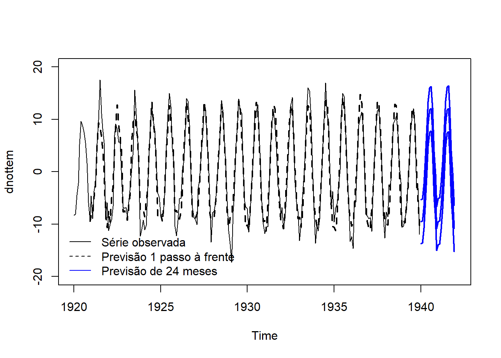

Carregando pacotes exigidos: dlm6 Modelos lineares dinâmicos sazonais
6.1 A soma de um ciclo sazonal
Como ilustração, considere um efeito sazonal trimestral (período 4). Considere os seguintes fatores sazonais:
\[\beta_t=\left\{\begin{array}{ll}1,& t=1,5,9,\ldots \\ 2,& t=2,6,10,\ldots\\ 3,&t=3,7,11,\ldots \\ 4,&t=4,8,12,\ldots\end{array}\right.\]
Note que \[\beta_1+\beta_2+\beta_3+\beta_4=10\]
Também note que \[\beta_2+\beta_3+\beta_4+\beta_5=10\] e que o mesmo é verdade para a soma de 4 quaiquer fatores sazonais consecutivos. Pode-se provar que, para qualquer sinal sazonal, a soma de seu efeito considerando um intervalo de tempo igual ao período é constante.
Considere então que uma série com período 4, fatores sazonais desconhecidos e e uma uma tendência, do tipo \[\hbox{tendência}(t)=\alpha+\gamma t.\] Então, para qualquer \(k=0,1,2,\ldots,\)
\[y_{k+1}+y_{k+2}+y_{k+3}+y_{k+4}=4\alpha+\gamma(10+4k)+\beta_1+\beta_2+\beta_3+\beta_4\]
Portanto, se os dados forem agregados para construir uma série anual, é impossível estimar \(\alpha\) e \(\beta_1+\beta_2+\beta_3+\beta_4\) em separado. Por isso, assuminos que a soma dos fatores sazonais deve ser nula. Intuitivamente, estamos dizendo que o nível da série não pode ser modelado pela tendência.
6.2 O modelo linear dinâmico para fatores sazonais
Considere uma série sazonal com período \(p\). No modelo linear dinâmico para fatores sazonais, assumimos que existem \(p-1\) fatores sazonais,
\[\psi_1,\ldots,\psi_{p-1},\] sendo que o \(p\)-ésimo fator é, necessariamente \(-(\psi_1-\psi_2-\cdots-\psi_{p-1}\). Além disso, permitimos que cada fator evolua no tempo, o que implica na notação \(\psi_t\). Contudo, neste modelo consideramos apenas uma evolução de nível para os fatores (em um problema mensal, todos os janeiros estariam flutuando em torno de um nível, por exemplo). Por este motivo, a previsão para cada fator dentro dentro de uma determinada posição do ciclo sazonal será constante.
A função dlmModSeas constrói as matrizes \(F_t\) e \(G_t\) para o modelo com fatores sazonais dinâmicos. Vamos ilustrar o uso deste modelo utilizando a série nottem - por didática, vamos remover a tendência da série via loess.
tempo <- 1:length(nottem)
dnottem <- nottem - loess( nottem ~ tempo)$fit
ts.plot(dnottem)
abline(h=0,lty =2)Já identificamos, em outro momento, que o período desta série é 12, logo
mod <- dlmModSeas(12)Precisamos colocar uma informação sobre os fatores sazonais. Vamos simplesmente assumir que todos valem zero.
mod$m0 <- rep(0,11)Vamos estimar as variâncias:
mod <- modFim(dnottem, mod)Em seguida, aplicamos o filtro de Kalman e verificamos os erros de previsão:
filtro <- dlmFilter(dnottem, mod)
erro <- dnottem - filtro$f
ts.plot(erro)acf(erro)Podemos notar que os erros foram altos no começo da série. Em geral, precisamos de pelos menos dois ciclos sazonais para ter uma previsão melhor. Já no correlograma, sobraram alguns elementos para serem explicados, como uma relação da série com as defasagens 1 e 2 e uma sazonalidade autoregressiva. Contudo, o comportamento sazonal, que era nosso objetivo, foi bem explicado.
As previsões vão se repetir após \(12\) unidades de tempo. Abaixo, fazemos a previsão para 2 anos.
previsao24 <- dlmForecast(filtro,24)
previsao24$f Jan Feb Mar Apr May Jun
1940 -9.5270342 -9.3875820 -6.5109877 -2.5961825 3.0938313 9.1652476
1941 -9.5270342 -9.3875820 -6.5109877 -2.5961825 3.0938313 9.1652476
Jul Aug Sep Oct Nov Dec
1940 11.7374593 12.0203431 7.9654691 -0.4551335 -4.7023333 -10.8030973
1941 11.7374593 12.0203431 7.9654691 -0.4551335 -4.7023333 -10.8030973Vamos colocar essas informações em um gráfico.
ts.plot(dnottem,xlim=c(1920,1942), ylim=c(-20,20))
lines( window(filtro$f,start=c(1920,12)), lty=2,lwd = 2)
# medidas para o intervalo de previsão
media_prev <- previsao24$f
media_prev <- ts(media_prev, start = c(1940,1), frequency = 12)
desv_prev <- sqrt( unlist( previsao24$Q))
desv_prev <- ts(desv_prev, start = c(1940,1), frequency = 12)
# intervalo de 90% para as previsões
lines(media_prev, lwd = 2, col ='blue')
lines(media_prev -1.64*desv_prev, lwd = 2, col ='blue')
lines(media_prev+1.64*desv_prev, lwd = 2, col ='blue')
# legenda
legend('bottomleft',c('Série observada','Previsão 1 passo à frente', 'Previsão de 24 meses'), lty=c(1,2,1), col =c(1,1,'blue'), bty = 'n')
Agora vamos estudar os estados suavizados. `
suave <- dlmSmooth(filtro)
sd <- sdSmooth(suave)Como o período é 12, existem \(p-1=11\) estados nesse modelo. Contudo, a matriz \(G_t\) é construída de modo que o primeiro estado sempre contém o fator sazonal da vez. Portanto, para poder analizar os fatores sazonais suavizados, basta selecionar a primeira coluna de s dentro do objeto suave
nivel_medio <- suave$s[,1]
sd_nivel <- sd[,1]
ts.plot(dnottem)
lines(nivel_medio, lwd = 2, col = 'seagreen')
# intervalor de credibilidade (95%) para o nível
lines(nivel_medio - 1.96*sd_nivel, lwd = 2, col = 'seagreen', lty= 2)
lines(nivel_medio + 1.96*sd_nivel, lwd = 2, col = 'seagreen', lty=2)6.3 Regressão harmônica dinâmica
Vimos anteriormente que uma onda, de período \(p\), pode ser representada pela função harmônica
\[g_1(t)=A_1\cos\left(\frac{2\pi}{p}t+\phi_1\right).\] Acontece que é possível que existam outros ciclos dentro do de duração \(p\).
Para ilustrar, vamos imaginar o caso no qual \(p=12\). Então, temos uma onda se reinicia a cada \(12\) meses, isto é,
\[g_1(t)=A_1\cos\left(\frac{2\pi}{12}t+\phi_1\right).\] Acontece que é possível que existam Porém podemos ter um outro efeito, que se renova a cada semestre. Nesse caso, teríamos outro harmônico para esse comportamento
\[g_2(t)=A_2\cos\left(\frac{2\pi}{6}t+\phi_2\right)\]
Também podemos ter um ciclo se repetindo a cada quatrimestre
\[g_3(t)=A_3\cos\left(\frac{2\pi}{4}t+\phi_3\right),\] e outro a cada trimestre
\[g_4(t)=A_4\cos\left(\frac{2\pi}{3}t+\phi_4\right).\]
Então, o nosso padrão sazonal seria a soma desses harmônicos:
\[g(t)=\sum_{j=1}^4 g_{j}(t)=\sum_{j=1}^4 A_j\cos\left(\frac{2\pi}{p}jt+\phi_j\right).\] A função \(g_j(t)\) é denominada \(j\)-ésimo harmônico e é possível ter \(q\) harmônicos, onde \(q\) é a parte inteira de \(p/2\).
A figura abaixo ilustra essa ideia.
No caso geral, para um período \(p\), podemos converter o modelo acima em um modelo linear
\[g(t)=\sum_{j=1}^{q} \beta_{1,j}\cos\left(\frac{2\pi}{p}jt\right)+\beta_{2,j}\sin\left(\frac{2\pi}{p}jt\right).\] De fato, existe \(\boldsymbol{F}_t'\) tal que
\[g(t)=\boldsymbol{F}_t'\boldsymbol{\beta},\] onde \(\boldsymbol{\beta}\) é um vetor contendo \(\beta_{1,1},\beta_{1,2},\ldots,\beta_{1,q},\beta_{2,q}\). O modelo
\[y_t= \boldsymbol{F}_t'\boldsymbol{\beta}+\varepsilon_t\] é denominado regressão harmônica. Assumindo que o vetor de parâmetros pode evoluir no tempo \(t\), considerando uma estrutura de nível, teremos o modelo de regressão harmônica dinâmico.
Vamos analisar a série dnottem utilizando esse modelo com apenas um harmônico. A função dlmModTrig(p,q) cria as matrizes necessárias para o modelo de regressão harmônica com período \(p\) e \(q\) harmônicos (se omitido, serão utilizados \(p/2\) harmônicos).
mod <- dlmModTrig(12, 1)
mod <- modFim( dnottem, mod)Vamos aplicar o filtro de Kalman:
filtro <- dlmFilter(dnottem,mod)A previsão é semelhante ao que já fizemos, então vamos apenas analisar os erros de previsão.
erros <- dnottem - filtro$f
ts.plot(erros)acf(erros)Note que o padrão sazonal não foi todo explicado. Abaixo utilizamos a função periodograma nos erros de previsão.
periodograma(erros)Período: 6 Note que o período encontrado é 6 - isso corresponde ao harmônico 2, uma vez que 12/2=6. Vamos reescrever nosso modelo colocando os dois primeiros harmônicos.
mod <- dlmModTrig(12, 2)
mod <- modFim( dnottem, mod)
filtro <- dlmFilter(dnottem,mod)
erros <- dnottem - filtro$f
ts.plot(erros)acf(erros)Agora toda a parte sazonal foi explicada. Isso implica que existem dois comportamentos: um ciclo sazonal com duração de 12 meses e outro com duração de 6 meses.
A amplitude é sem dúvidas uma medida importante, uma vez que ela mede a magnitude do harmônico. Vamos obter as estimativas suavizadas das duas amplitudes.
suave <- dlmSmooth(filtro)Em suave$s, obtemos as estimativas suavizadas para os estados da regressão harmônica. São quatro colunas, sendo que as duas primeiras são referentes ao harmônico 1 e as duas seguinda ao 2. Vamos recuperar as amplitudes:
A1 <- sqrt( suave$s[,1]^2 + suave$s[,2]^2 )
A2 <- sqrt( suave$s[,3]^2 + suave$s[,4]^2 )
plot.ts( cbind(A1, A2), lwd = 2)Podemos perceber que houve um leve aumento do nível da amplitude do efeito sazonal anual, indo de 10 para 12 unidades, entre 1920 e 1934 (série A1). Já o efeito semestral, com influência bem menor, apresentou padrões de tendência crescente e decrescente ao longo do tempo.
6.4 A superposição de modelos lineares dinâmicos
Podemos imaginar que uma série temporal \(y_t\) é a soma de várias séries ocultas. Por exemplo, considere que
\(y_t=x_t+u_t\)
onde \(x_t\) é uma série que possui apenas a tendência da série e \(u_t\) a parte sazonal.
Teorema. Se \(x_t\) e \(u_t\) são modelos lineares dinâmicos, então \(y_t\) também é um modelo linear dinâmico.
Deste modo, podemos somar modelos lineares dinâmicos para analizar diferentes tipos de sinal.
Considere a série ldeaths, que já sabemos possuir uma leve tendência linear de decrescimento e um forte sinal sazonal de período 12. Podemos ajustar um modelo linear dinâmico com essas duas características.
mod <- dlmModPoly(2) + dlmModSeas(12)
mod$m0[1] <- ldeaths[1]
mod <- modFim(ldeaths, mod)
filtro <- dlmFilter(ldeaths, mod)
erro <- ldeaths - filtro$f
ts.plot(erro)acf(erro)Os gráficos acima apontam que os sinais de tendêcia e sazonalidade estão bem descritos. Vamos fazer a previsão para 12 meses a frente:
previsao12 <- dlmForecast(filtro, 12)
ts.plot(ldeaths,xlim=c(1974,1981), ylim=c(-400,4000))
lines( window(filtro$f,start=c(1974,1)), lty=2,lwd = 2)
# medidas para o intervalo de previsão
media_prev <- previsao12$f
media_prev <- ts(media_prev, start = c(1980,1), frequency = 12)
desv_prev <- sqrt( unlist( previsao12$Q))
desv_prev <- ts(desv_prev, start = c(1980,1), frequency = 12)
# intervalo de 90% para as previsões
lines(media_prev, lwd = 2, col ='blue')
lines(media_prev -1.64*desv_prev, lwd = 2, col ='blue')
lines(media_prev+1.64*desv_prev, lwd = 2, col ='blue')
# legenda
legend('bottomleft',c('Série observada','Previsão 1 passo à frente', 'Previsão de 24 meses'), lty=c(1,2,1), col =c(1,1,'blue'), bty = 'n')Também podemos estudar os elementos suavisados dos sinais:
suave <- dlmSmooth(filtro)
sd <- sdSmooth(suave)
Nível <- suave$s[,1]
`Inc. tend` <- suave$s[,2]
`Fat. Saz` <- suave$s[,3]
plot.ts(cbind(Nível, `Inc. tend`,`Fat. Saz`), main = 'Componentes do sinal')6.5 Exercícios
Exercício 2
Analise as seguintes séries temporais:
Óbitos maternos
Número de nascidos vivos
co2Taxa de desemprego
Analise as seguintes séries temporais: Exercício 2 Compare a tendência e sazonalidade do número de nascidos vivos segundo os partos normal e cesário.
6 Modelos lineares dinâmicos sazonais – Introdução aos modelos lineares dinâmicos 6 Modelos lineares dinâmicos sazonais – Introdução aos modelos lineares dinâmicos 6 Modelos lineares dinâmicos sazonais – Introdução aos modelos lineares dinâmicos Introdução aos modelos lineares dinâmicos